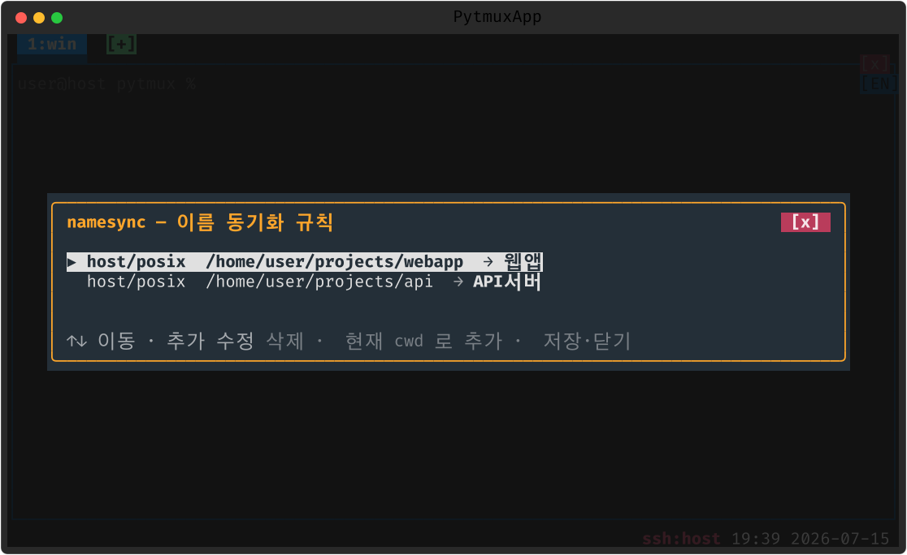

claude-name-sync
“이 디렉토리에서 Claude 를 켜면 이 이름” 규칙을 등록해 두면, 해당 경로에서 Claude 가 시작될 때 pytmux 탭/패널 이름과 Claude 세션 이름을 키워드로 자동 통일합니다.
여는 법 · 규칙
| 명령 | 설명 |
|---|---|
namesync | 이름 동기화 규칙 목록 팝업 (별칭 nsync) |
팝업에서 ↑↓ 이동, a 추가 · e 수정 · d 삭제, Enter 는 현재 디렉토리를 미리 채운 추가, Esc 저장 후 닫기.

메모
규칙은 정확히 그 디렉토리에서만(하위 제외) 일치하며 호스트/OS 를 한정할 수 있습니다. 패널당 1회만 적용되고, 수동으로 이름을 바꾸면 되돌리지 않습니다.
끄기 · 제거
:plugins 관리 팝업에서 끄거나(가역), pytmuxlib/plugins/claude-name-sync/
디렉토리를 지우면(delete-to-disable) 명령·자동완성·메뉴 어디에도 나타나지 않고 조용히
사라집니다. 코어는 영향받지 않습니다. ← 플러그인 개요